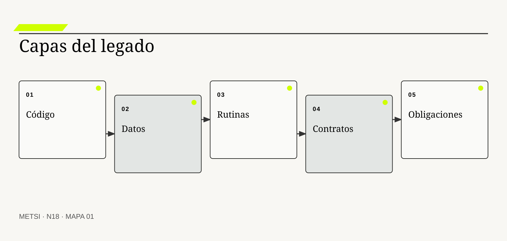
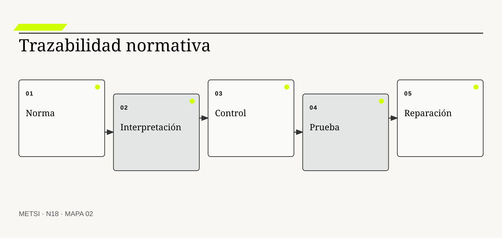
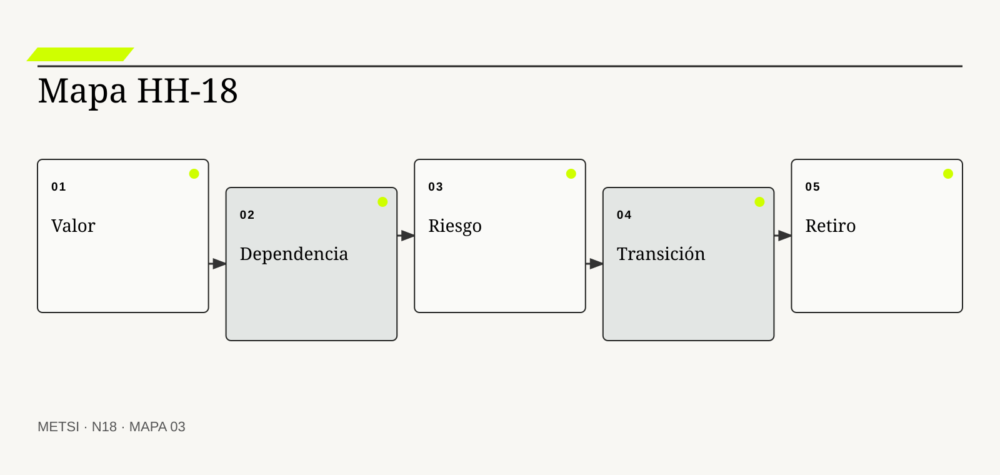

ML
Manny Lehman
Estudió la evolución continua de sistemas usados en entornos reales.

N18 convierte legado, regulación y documentación en objetos de análisis con valor, costo, evidencia y ciclo de vida.
Legado, regulación y documentación como valor, restricción y evidencia
Ruta de lectura: problema, distinciones, decisiones, prueba, transferencia y preparación.
Nota. SIN NUM. identifica aparatos de orientación y referencia.
Seis voces para ampliar, contrastar y discutir N18.
Estudió la evolución continua de sistemas usados en entornos reales.
Mostró el valor de ocultar decisiones y diseñar para el cambio.
Introdujo la metáfora de deuda técnica para discutir costo diferido.
Desarrolló prácticas para cambiar código heredado bajo pruebas.
Establece procesos e información del ciclo de vida de sistemas y software.

Integra desarrollo seguro, procedencia y riesgo de cadena de suministro.
N18 no resume estas fuentes ni las convierte en receta. Las pone en tensión para construir juicio profesional.
¿Cómo intervenir sobre un sistema heredado sin confundir lo viejo con lo inútil, la norma con el trámite ni la documentación con una copia de la realidad?
Hotel Horizonte decide reemplazar una interfaz antigua usada para reasignar habitaciones. El formulario parece redundante, duplica datos y exige una confirmación telefónica. La organización propone eliminarlo en el primer incremento porque no encuentra esa secuencia en el manual vigente.
Durante la prueba, una recepcionista explica que la llamada evita cambiar una habitación accesible ya prometida por Comercial. La regla nació después de una queja grave, quedó codificada en permisos del PMS y se sostuvo mediante capacitación oral. La documentación describe el camino ordinario; el legado conserva una obligación que dejó de ser visible.
Conservar todo por temor inmovilizaría el servicio. Eliminar todo por modernidad borraría evidencia y control. El problema no es decidir si el legado es bueno o malo, sino reconstruir qué conocimiento, dependencia, derecho y riesgo contiene cada pieza.
La organización abre un expediente. Vincula código, configuración, procedimiento, resolución, casos recientes y personas que ejecutan excepciones. Distingue requisito vigente, solución histórica, deuda, adaptación local y residuo sin uso. Recién entonces diseña una transición.
La documentación cambia de función. Ya no intenta fotografiar todo el sistema. Registra decisiones, obligaciones, interfaces, pruebas y condiciones de retiro. La regulación tampoco aparece como barrera externa: organiza quién puede decidir, qué debe demostrarse y qué daño no puede aceptarse.
N18 recibe de HH-17 una lógica de intervención y la somete a la realidad instalada. Enseña que el pasado está presente en datos, contratos, hábitos, infraestructura y expectativas, y que transformar exige conocer qué se puede cambiar, qué debe preservarse y qué necesita autorización.
HH-17 proponía iterar reglas y entregar capacidad por pisos. HH-18 agrega una restricción: el PMS, la cerradura, los contratos de canal y las prácticas de Recepción contienen decisiones tomadas en momentos diferentes. HH-18 separa obligación actual, solución heredada, excepción útil, dependencia accidental y documentación faltante. La transición conserva la protección de accesibilidad, reemplaza la llamada por una verificación trazable y mantiene un circuito manual hasta demostrar cobertura.
N18 convierte legado, regulación y documentación en objetos de análisis con valor, costo, evidencia y ciclo de vida. La modernización deja de significar sustitución automática y pasa a ser un juicio profesional de continuidad responsable.
N17 deja evidencia y decisiones abiertas que N18 utiliza sin reabrir su contenido. N18 convierte legado, regulación y documentación en objetos de análisis con valor, costo, evidencia y ciclo de vida. La modernización deja de significar sustitución automática y pasa a ser un juicio profesional de continuidad responsable.
N19 evaluará alternativas de realización y abastecimiento. N18 no decide todavía si conviene construir, configurar, integrar, tercerizar, mantener trabajo manual o no automatizar.

N18 convierte legado, regulación y documentación en objetos de análisis con valor, costo, evidencia y ciclo de vida.
Lehman, M. M. explica por qué un sistema usado continúa cambiando junto con su entorno. En N18, ese aporte pone a prueba decisiones concretas y no funciona como respaldo ornamental. Su alcance se conserva en N18: ninguna referencia sustituye los indicios disponibles del caso ni la función autorizada necesaria para intervenir.
Parnas, D. L. trata decisiones de diseño y ocultamiento de información como preparación para el cambio. En N18, ese aporte pone a prueba decisiones concretas y no funciona como respaldo ornamental. Su alcance se conserva en N18: ninguna referencia sustituye los indicios disponibles del caso ni la función autorizada necesaria para intervenir.
Feathers, M. vincula modificación segura de legado con caracterización y pruebas. En N18, ese aporte pone a prueba decisiones concretas y no funciona como respaldo ornamental. Su alcance se conserva en N18: ninguna referencia sustituye los indicios disponibles del caso ni la función autorizada necesaria para intervenir.
ISO/IEC/IEEE sitúa desarrollo, operación, mantenimiento y retiro en un ciclo de vida común. En N18, ese aporte pone a prueba decisiones concretas y no funciona como respaldo ornamental. Su alcance se conserva en N18: ninguna referencia sustituye los indicios disponibles del caso ni la función autorizada necesaria para intervenir.
ISO/IEC/IEEE ordena información de ciclo de vida por propósito y contenido, no por acumulación documental. En N18, ese aporte pone a prueba decisiones concretas y no funciona como respaldo ornamental. Su alcance se conserva en N18: ninguna referencia sustituye los indicios disponibles del caso ni la función autorizada necesaria para intervenir.
ISO/IEC/IEEE establece procesos de ciclo de vida sin prescribir un modelo único y admite aplicación iterativa y concurrente. En N18, ese aporte pone a prueba decisiones concretas y no funciona como respaldo ornamental. Su alcance se conserva en N18: ninguna referencia sustituye los indicios disponibles del caso ni la función autorizada necesaria para intervenir.
European Union introduce obligaciones sobre finalidad, minimización, derechos y responsabilidad. En N18, ese aporte pone a prueba decisiones concretas y no funciona como respaldo ornamental. Su alcance se conserva en N18: ninguna referencia sustituye los indicios disponibles del caso ni la función autorizada necesaria para intervenir.
European Union conecta uso de inteligencia artificial con riesgo, obligaciones y supervisión. En N18, ese aporte pone a prueba decisiones concretas y no funciona como respaldo ornamental. Su alcance se conserva en N18: ninguna referencia sustituye los indicios disponibles del caso ni la función autorizada necesaria para intervenir.
NIST aporta prácticas de desarrollo seguro integradas al ciclo de vida. En N18, ese aporte pone a prueba decisiones concretas y no funciona como respaldo ornamental. Su alcance se conserva en N18: ninguna referencia sustituye los indicios disponibles del caso ni la función autorizada necesaria para intervenir.
NIST extiende el desarrollo seguro a riesgos específicos de modelos generativos. En N18, ese aporte pone a prueba decisiones concretas y no funciona como respaldo ornamental. Su alcance se conserva en N18: ninguna referencia sustituye los indicios disponibles del caso ni la función autorizada necesaria para intervenir.
CISA desplaza seguridad desde el usuario hacia decisiones de producto y proveedor. En N18, ese aporte pone a prueba decisiones concretas y no funciona como respaldo ornamental. Su alcance se conserva en N18: ninguna referencia sustituye los indicios disponibles del caso ni la función autorizada necesaria para intervenir.
W3C fundamenta procedencia mediante entidades, actividades y agentes. En N18, ese aporte pone a prueba decisiones concretas y no funciona como respaldo ornamental. Su alcance se conserva en N18: ninguna referencia sustituye los indicios disponibles del caso ni la función autorizada necesaria para intervenir.

El legado es capacidad instalada, conocimiento, dependencia y compromiso acumulado, no sólo tecnología antigua. La definición fija el objeto de decisión. Si el equipo de N18 no puede expresar qué compromiso organiza, la categoría funciona como etiqueta y no como instrumento.
Se confunde antigüedad con obsolescencia y novedad con adecuación. La distinción evita que una palabra familiar oculte otro mecanismo. En N18, confundirlos cambia qué se observa, qué se acepta como avance y quién debe intervenir.
En legado sociotécnico, el recorrido causal debe mostrar qué condición habilita la acción, qué transformación ocurre y quién absorbe el resultado. Código, datos, contratos, rutinas y expectativas se estabilizan mutuamente y hacen costoso un cambio local. Si un salto depende sólo de una explicación oral, la estrategia todavía no puede gobernarlo.
La evidencia relevante para legado sociotécnico no se limita al resultado promedio. Inventarios, incidentes, trazas, entrevistas y decisiones pasadas muestran qué sostiene realmente la operación. N18 busca además casos negativos, diferencias entre poblaciones y señales de que la explicación elegida podría ser insuficiente.
Ejemplo. La pantalla vieja contiene una validación de accesibilidad ausente en el rediseño. En N18, el episodio vuelve visible la relación entre ritmo, autoridad, evidencia y capacidad de reparación.
El tradeoff central de legado sociotécnico aparece entre anticipar y preservar opciones. Anticipar puede reducir coordinación y también fijar una premisa prematura; preservar opciones puede producir aprendizaje y también demorar una protección necesaria. La elección debe declarar cuál de esos costos acepta, durante cuánto tiempo y para quién.
La auditoría de legado sociotécnico termina con una pregunta de uso: ¿qué podría decidir ahora una persona que antes no podía? En N18, la respuesta debe nombrar una acción, una restricción y una evidencia, no sólo una comprensión mejorada.
Operacionalizar legado sociotécnico requiere asignar una unidad observable. La organización define qué episodio contará, desde qué momento, con qué población y bajo qué fuente. Después compara al menos un caso ordinario con otro que fuerce excepción. Esta precisión en N18 evita que una conclusión general se sostenga sólo en ejemplos convenientes.
La decisión profesional no termina en adoptar legado sociotécnico. Se compara una ruta principal con una explicación rival, se explicita quién queda expuesto y se conserva un modo de revisar. Conservar sin evaluar perpetúa daño; reemplazar sin comprender puede eliminar una protección. El límite forma parte del diseño y no una nota posterior.
La arqueología reconstruye por qué existe una pieza y qué consecuencias produce hoy. Conviene comenzar por su función profesional. Si el equipo de N18 no puede expresar qué compromiso organiza, la categoría funciona como etiqueta y no como instrumento.
No es nostalgia ni documentación retrospectiva exhaustiva. El contraste importa porque conduce a pruebas distintas. En N18, confundirlos cambia qué se observa, qué se acepta como avance y quién debe intervenir.
El mecanismo de arqueología del sistema no se presume por el nombre. Conecta versiones, commits, tickets, manuales, contratos, relatos y episodios para formular hipótesis contrastables. Debe localizarse dónde comienza, qué relaciones activa, qué demora introduce y qué capacidad de reparación queda disponible cuando la expectativa no se cumple.
Una afirmación sobre arqueología del sistema gana fuerza cuando puede reconstruirse desde fuentes independientes. Una cadena de evidencia debe permitir distinguir decisión deliberada de accidente sedimentado. La ausencia de señal también se interpreta: puede significar estabilidad, mala observación o exclusión del caso que más importa.
Ejemplo. Un campo obligatorio nació para cumplir un reporte ya derogado, pero hoy alimenta conciliación. En N18, el episodio vuelve visible la relación entre ritmo, autoridad, evidencia y capacidad de reparación.
La escala modifica arqueología del sistema. Una solución válida para un equipo puede fallar cuando atraviesa sedes, turnos o proveedores porque aumenta la distancia entre señal y autoridad. Antes de ampliar, N18 prueba si la misma decisión conserva significado y reparación bajo esa nueva distribución.
Para evitar consenso aparente, arqueología del sistema se revisa con alguien afectado y con alguien responsable de reparar. Las dos perspectivas pueden valorar resultados diferentes y obligan a declarar la prioridad elegida.
En la práctica, arqueología del sistema atraviesa más de un área. Se identifican handoffs, esperas, decisiones y datos que cada participante puede ver. Cuando dos áreas usan evidencia distinta en N18, el expediente conserva la divergencia hasta determinar si representa error, perspectiva legítima o una brecha que la estrategia debe resolver.
En una revisión, arqueología del sistema debe responder tres preguntas: qué mejora, qué desplaza y qué vuelve más difícil de revertir. Si no aparece propósito vigente, se prueba retiro controlado en lugar de asumir inutilidad. Si esas respuestas cambian, también debe cambiar el compromiso, aunque el trabajo previo haya sido técnicamente correcto.
La deuda es una obligación futura creada por un juicio profesional presente que reduce costo o tiempo inmediato. El concepto adquiere valor cuando cambia un juicio profesional. Si el equipo de N18 no puede expresar qué compromiso organiza, la categoría funciona como etiqueta y no como instrumento.
No todo legado es deuda y no toda deuda es código deficiente. Su vecino conceptual puede parecer equivalente y no lo es. En N18, confundirlos cambia qué se observa, qué se acepta como avance y quién debe intervenir.
Comprender deuda técnica y deuda institucional exige seguir la decisión en el tiempo. Intereses aparecen como demora, fragilidad, dependencia de personas, riesgo regulatorio o incapacidad de aprender. El análisis distingue condición, intervención, señal temprana y consecuencia para evitar atribuir a una práctica un efecto producido por otro cambio simultáneo.
La verificación de deuda técnica y deuda institucional debe formularse antes de conocer el resultado. Se estima mediante frecuencia de cambio, incidentes, esfuerzo de comprensión y consecuencias acumuladas. Se registra qué observación sostendría continuar, cuál obligaría a adaptar y cuál activaría detención o escalamiento.
Ejemplo. Una regla duplicada acelera una entrega y exige reconciliación manual cada noche. En N18, el episodio vuelve visible la relación entre ritmo, autoridad, evidencia y capacidad de reparación.
El tiempo también altera deuda técnica y deuda institucional. Una evidencia suficiente para explorar puede ser insuficiente para operar de forma permanente. Por eso se separan prueba local, compromiso transitorio y condición estable, y cada estado conserva fecha, alcance y responsable de revisión.
El registro de deuda técnica y deuda institucional conserva una explicación rival. Si esa alternativa predice mejor el episodio siguiente, el equipo cambia de curso sin reescribir retrospectivamente lo que creía saber.
La gobernanza de deuda técnica y deuda institucional incluye quién puede proponer, aprobar, ejecutar, observar y reparar. Esas funciones no se presumen por cargo ni por permiso técnico. N18 las prueba en un escenario donde falta la persona habitual, porque una capacidad que sólo funciona con conocimiento privado todavía no pertenece a la organización.
El juicio sobre deuda técnica y deuda institucional incluye distribución de consecuencias. La metáfora financiera falla si oculta quién paga o sugiere que toda deuda debe cancelarse. Una mejora agregada no alcanza si concentra espera, riesgo o trabajo invisible en un grupo sin autoridad para discutir la decisión.
El acoplamiento expresa cuánto depende una capacidad de elementos que cambian juntos. La definición fija el objeto de decisión. Si el equipo de N18 no puede expresar qué compromiso organiza, la categoría funciona como etiqueta y no como instrumento.
Se confunde con conexión visible o cantidad de interfaces. La distinción evita que una palabra familiar oculte otro mecanismo. En N18, confundirlos cambia qué se observa, qué se acepta como avance y quién debe intervenir.
La explicación operacional de acoplamiento y radio de impacto conecta personas, reglas y tecnología. Dependencias semánticas, temporales, organizacionales y contractuales propagan cambios más allá del componente. Esa conexión permite decidir qué parte puede modificarse localmente y cuál requiere coordinación con otras autoridades o capacidades.
Para auditar acoplamiento y radio de impacto, conviene combinar evidencia de diseño, ejecución y consecuencia. Pruebas de impacto, trazas y fallas históricas revelan rutas que el diagrama no muestra. Ninguna fuente domina automáticamente; una especificación correcta puede convivir con una operación dañina.
Ejemplo. Renombrar un estado altera tablero, canal, capacitación y compensaciones. En N18, el episodio vuelve visible la relación entre ritmo, autoridad, evidencia y capacidad de reparación.
Existe además una dimensión política en acoplamiento y radio de impacto. La opción más eficiente puede reducir la capacidad de una persona para cuestionar un juicio profesional o trasladar trabajo sin reconocerlo. N18 registra esa distribución y no la esconde dentro de un indicador agregado.
Una prueba adversa de acoplamiento y radio de impacto introduce demora, ausencia de autoridad o dato incompleto. El objetivo de N18 no es cubrir todas las fallas, sino revelar si la estrategia mantiene una salida segura fuera del camino ordinario.
El indicador de acoplamiento y radio de impacto se elige después de formular la decisión. Puede combinar tiempo, calidad, distribución y costo de reparación. Una cifra aislada rara vez explica el mecanismo. En N18, la lectura conjunta de señales evita optimizar velocidad mientras aumenta retrabajo, exclusión o dependencia.
La condición de cierre de acoplamiento y radio de impacto no es perfección. Desacoplar puede trasladar complejidad a contratos y monitoreo; no siempre reduce riesgo total. Es evidencia suficiente para el uso previsto, riesgo residual aceptado por autoridad y una ruta clara cuando el supuesto deje de cumplirse.

La regulación define derechos, obligaciones, evidencia y autoridad que la solución debe realizar. Conviene comenzar por su función profesional. Si el equipo de N18 no puede expresar qué compromiso organiza, la categoría funciona como etiqueta y no como instrumento.
No equivale a una lista de controles agregada al final. El contraste importa porque conduce a pruebas distintas. En N18, confundirlos cambia qué se observa, qué se acepta como avance y quién debe intervenir.
Para que regulación como requisito de diseño sea algo más que una etiqueta, debe existir una cadena examinable. Una obligación se transforma en decisiones de proceso, datos, interfaz, retención, revisión y reparación. La cadena incluye supuestos, handoffs y efectos laterales que una descripción ideal suele omitir.
La organización no declara resuelto regulación como requisito de diseño por acuerdo retórico. La conformidad exige trazabilidad desde norma aplicable hasta implementación y prueba. Una persona ajena al diseño debe poder repetir la prueba y comprender por qué el resultado habilita un juicio profesional concreta.
Ejemplo. El derecho a revisión necesita canal, plazo, evidencia accesible y autoridad efectiva. En N18, el episodio vuelve visible la relación entre ritmo, autoridad, evidencia y capacidad de reparación.
La mantenibilidad de regulación como requisito de diseño se prueba mediante cambio deliberado. Se modifica una regla, una fuente o una dependencia y se observa quién detecta el impacto, cuánto tarda en responder y qué información necesita. En N18, si la respuesta depende de memoria privada, la capacidad todavía es frágil.
El costo de regulación como requisito de diseño se observa tanto en presupuesto como en atención, espera, coordinación y dependencia. Lo que no figura en una factura puede seguir siendo el costo que define la viabilidad.
La transición asociada con regulación como requisito de diseño necesita un estado intermedio explícito. Durante ese período conviven reglas, versiones o capacidades diferentes. N18 declara cuál rige para cada población, cómo se comunica y qué contingencia protege a quien podría quedar entre ambos sistemas.
El análisis de regulación como requisito de diseño evita dos extremos: conservar por inercia y cambiar por identidad metodológica. Cumplir literalmente puede seguir produciendo daño si la capacidad sólo existe en papel. Entre ambos queda un juicio profesional provisional con fecha, responsable y prueba de revisión.
Interpretar una norma consiste en determinar alcance y consecuencia con autoridad competente. El concepto adquiere valor cuando cambia un juicio profesional. Si el equipo de N18 no puede expresar qué compromiso organiza, la categoría funciona como etiqueta y no como instrumento.
No es tarea exclusiva del área legal ni una traducción mecánica a requisito. Su vecino conceptual puede parecer equivalente y no lo es. En N18, confundirlos cambia qué se observa, qué se acepta como avance y quién debe intervenir.
El valor de interpretación normativa aparece al contrastar alternativas. Casos, jurisdicción, contratos y diseño interactúan; las ambigüedades requieren decisión registrada. Si dos opciones producen el mismo entregable inmediato, el mecanismo permite compararlas por aprendizaje, dependencia, riesgo residual y posibilidad de salida.
La suficiencia de evidencia para interpretación normativa depende del costo de equivocarse. Dictámenes, precedentes, consultas y pruebas de operación sostienen una interpretación revisable. A mayor irreversibilidad o desigualdad de daño, mayor contraste, supervisión y autoridad se requieren.
Ejemplo. Una regla de retención cambia según finalidad y población, no por preferencia técnica. En N18, el episodio vuelve visible la relación entre ritmo, autoridad, evidencia y capacidad de reparación.
Finalmente, interpretación normativa debe convivir con otras decisiones. Optimizarla de manera aislada puede empeorar flujo, seguridad o comprensión. HH-18 N18 explicita dependencias y evita que una mejora local se presente como outcome completo del sistema.
La revisión de interpretación normativa fija fecha y desencadenante. Puede ocurrir por incidente, cambio normativo, nueva población o evidencia acumulada. Sin esa regla en N18, un juicio profesional provisional se vuelve permanente por olvido.
El cierre de interpretación normativa debe sobrevivir a una revisión independiente. La evidencia, las decisiones y los límites se almacenan de manera que otra persona pueda cuestionarlos. En N18, la trazabilidad no busca eliminar desacuerdo; busca que el desacuerdo se concentre en supuestos examinables y no en recuerdos incompatibles.
La transición debe poder explicar por qué interpretación normativa recibe cierta inversión y no otra. La organización no inventa permiso ante silencio; escala la incertidumbre y limita exposición. Esa explicación conecta valor, costo, aprendizaje y reparación, y permanece abierta a evidencia nueva.
La documentación coordina personas, decisiones y artefactos a través del tiempo. La definición fija el objeto de decisión. Si el equipo de N18 no puede expresar qué compromiso organiza, la categoría funciona como etiqueta y no como instrumento.
No es un espejo completo ni un entregable administrativo autónomo. La distinción evita que una palabra familiar oculte otro mecanismo. En N18, confundirlos cambia qué se observa, qué se acepta como avance y quién debe intervenir.
En documentación como interfaz, el recorrido causal debe mostrar qué condición habilita la acción, qué transformación ocurre y quién absorbe el resultado. Selecciona información para que una audiencia pueda actuar, verificar, mantener o reparar. Si un salto depende sólo de una explicación oral, la estrategia todavía no puede gobernarlo.
La evidencia relevante para documentación como interfaz no se limita al resultado promedio. Se valida observando si otra persona ejecuta un juicio profesional correcta sin explicación oral privilegiada. N18 busca además casos negativos, diferencias entre poblaciones y señales de que la explicación elegida podría ser insuficiente.
Ejemplo. Una ficha de excepción enlaza regla, responsable, evidencia, contingencia y fecha de revisión. En N18, el episodio vuelve visible la relación entre ritmo, autoridad, evidencia y capacidad de reparación.
El tradeoff central de documentación como interfaz aparece entre anticipar y preservar opciones. Anticipar puede reducir coordinación y también fijar una premisa prematura; preservar opciones puede producir aprendizaje y también demorar una protección necesaria. La elección debe declarar cuál de esos costos acepta, durante cuánto tiempo y para quién.
La auditoría de documentación como interfaz termina con una pregunta de uso: ¿qué podría decidir ahora una persona que antes no podía? En N18, la respuesta debe nombrar una acción, una restricción y una evidencia, no sólo una comprensión mejorada.
Operacionalizar documentación como interfaz requiere asignar una unidad observable. La organización define qué episodio contará, desde qué momento, con qué población y bajo qué fuente. Después compara al menos un caso ordinario con otro que fuerce excepción. Esta precisión en N18 evita que una conclusión general se sostenga sólo en ejemplos convenientes.
La decisión profesional no termina en adoptar documentación como interfaz. Se compara una ruta principal con una explicación rival, se explicita quién queda expuesto y se conserva un modo de revisar. Más páginas pueden disminuir utilidad si mezclan vigencia, audiencias y niveles. El límite forma parte del diseño y no una nota posterior.
La información de ciclo de vida conserva lo necesario para concebir, operar, sostener y retirar una capacidad. Conviene comenzar por su función profesional. Si el equipo de N18 no puede expresar qué compromiso organiza, la categoría funciona como etiqueta y no como instrumento.
No coincide con documentos producidos por fase ni con un repositorio indiscriminado. El contraste importa porque conduce a pruebas distintas. En N18, confundirlos cambia qué se observa, qué se acepta como avance y quién debe intervenir.
El mecanismo de información de ciclo de vida no se presume por el nombre. Cada decisión genera evidencia con dueño, vigencia, acceso y condición de actualización. Debe localizarse dónde comienza, qué relaciones activa, qué demora introduce y qué capacidad de reparación queda disponible cuando la expectativa no se cumple.
Una afirmación sobre información de ciclo de vida gana fuerza cuando puede reconstruirse desde fuentes independientes. La cobertura se prueba desde una pregunta operacional hasta la fuente que permite responderla. La ausencia de señal también se interpreta: puede significar estabilidad, mala observación o exclusión del caso que más importa.
Ejemplo. Retirar un servicio exige conocer consumidores, datos, obligaciones y ruta de recuperación. En N18, el episodio vuelve visible la relación entre ritmo, autoridad, evidencia y capacidad de reparación.
La escala modifica información de ciclo de vida. Una solución válida para un equipo puede fallar cuando atraviesa sedes, turnos o proveedores porque aumenta la distancia entre señal y autoridad. Antes de ampliar, N18 prueba si la misma decisión conserva significado y reparación bajo esa nueva distribución.
Para evitar consenso aparente, información de ciclo de vida se revisa con alguien afectado y con alguien responsable de reparar. Las dos perspectivas pueden valorar resultados diferentes y obligan a declarar la prioridad elegida.
En la práctica, información de ciclo de vida atraviesa más de un área. Se identifican handoffs, esperas, decisiones y datos que cada participante puede ver. Cuando dos áreas usan evidencia distinta en N18, el expediente conserva la divergencia hasta determinar si representa error, perspectiva legítima o una brecha que la estrategia debe resolver.
En una revisión, información de ciclo de vida debe responder tres preguntas: qué mejora, qué desplaza y qué vuelve más difícil de revertir. Conservar todo sin clasificación crea ambigüedad y aumenta superficie de riesgo. Si esas respuestas cambian, también debe cambiar el compromiso, aunque el trabajo previo haya sido técnicamente correcto.

Migrar datos significa preservar significado y uso autorizado, no sólo copiar registros. El concepto adquiere valor cuando cambia un juicio profesional. Si el equipo de N18 no puede expresar qué compromiso organiza, la categoría funciona como etiqueta y no como instrumento.
Se confunde integridad sintáctica con continuidad de evidencia. Su vecino conceptual puede parecer equivalente y no lo es. En N18, confundirlos cambia qué se observa, qué se acepta como avance y quién debe intervenir.
Comprender migración de datos como decisión semántica exige seguir la decisión en el tiempo. Mapeos, transformaciones y reglas de calidad pueden cambiar identidad, tiempo y población. El análisis distingue condición, intervención, señal temprana y consecuencia para evitar atribuir a una práctica un efecto producido por otro cambio simultáneo.
La verificación de migración de datos como decisión semántica debe formularse antes de conocer el resultado. Reconciliaciones, muestras adversas y pruebas de decisiones verifican lo que sobrevivió. Se registra qué observación sostendría continuar, cuál obligaría a adaptar y cuál activaría detención o escalamiento.
Ejemplo. Un estado histórico se transforma en dos y altera métricas de demora. En N18, el episodio vuelve visible la relación entre ritmo, autoridad, evidencia y capacidad de reparación.
El tiempo también altera migración de datos como decisión semántica. Una evidencia suficiente para explorar puede ser insuficiente para operar de forma permanente. Por eso se separan prueba local, compromiso transitorio y condición estable, y cada estado conserva fecha, alcance y responsable de revisión.
El registro de migración de datos como decisión semántica conserva una explicación rival. Si esa alternativa predice mejor el episodio siguiente, el equipo cambia de curso sin reescribir retrospectivamente lo que creía saber.
La gobernanza de migración de datos como decisión semántica incluye quién puede proponer, aprobar, ejecutar, observar y reparar. Esas funciones no se presumen por cargo ni por permiso técnico. N18 las prueba en un escenario donde falta la persona habitual, porque una capacidad que sólo funciona con conocimiento privado todavía no pertenece a la organización.
El juicio sobre migración de datos como decisión semántica incluye distribución de consecuencias. Algunos datos no deben migrarse por propósito, minimización o riesgo; la ausencia necesita explicación. Una mejora agregada no alcanza si concentra espera, riesgo o trabajo invisible en un grupo sin autoridad para discutir la decisión.
Una excepción heredada es una desviación estabilizada que puede contener conocimiento, privilegio o daño. La definición fija el objeto de decisión. Si el equipo de N18 no puede expresar qué compromiso organiza, la categoría funciona como etiqueta y no como instrumento.
No debe celebrarse como experiencia ni eliminarse como anomalía sin investigación. La distinción evita que una palabra familiar oculte otro mecanismo. En N18, confundirlos cambia qué se observa, qué se acepta como avance y quién debe intervenir.
La explicación operacional de excepciones heredadas conecta personas, reglas y tecnología. Aparece cuando el camino formal no absorbe una condición y la organización crea una ruta paralela. Esa conexión permite decidir qué parte puede modificarse localmente y cuál requiere coordinación con otras autoridades o capacidades.
Para auditar excepciones heredadas, conviene combinar evidencia de diseño, ejecución y consecuencia. Frecuencia, población, autoridad, resultado y reparación permiten clasificarla. Ninguna fuente domina automáticamente; una especificación correcta puede convivir con una operación dañina.
Ejemplo. La llamada de Recepción protege accesibilidad y también depende de memoria individual. En N18, el episodio vuelve visible la relación entre ritmo, autoridad, evidencia y capacidad de reparación.
Existe además una dimensión política en excepciones heredadas. La opción más eficiente puede reducir la capacidad de una persona para cuestionar un juicio profesional o trasladar trabajo sin reconocerlo. N18 registra esa distribución y no la esconde dentro de un indicador agregado.
Una prueba adversa de excepciones heredadas introduce demora, ausencia de autoridad o dato incompleto. El objetivo de N18 no es cubrir todas las fallas, sino revelar si la estrategia mantiene una salida segura fuera del camino ordinario.
El indicador de excepciones heredadas se elige después de formular la decisión. Puede combinar tiempo, calidad, distribución y costo de reparación. Una cifra aislada rara vez explica el mecanismo. En N18, la lectura conjunta de señales evita optimizar velocidad mientras aumenta retrabajo, exclusión o dependencia.
La condición de cierre de excepciones heredadas no es perfección. Formalizar una excepción injusta consolida el problema; automatizarla puede escalarlo. Es evidencia suficiente para el uso previsto, riesgo residual aceptado por autoridad y una ruta clara cuando el supuesto deje de cumplirse.
La mantenibilidad incluye cambiar con comprensión, prueba y recuperación, mientras seguridad limita exposición y abuso. Conviene comenzar por su función profesional. Si el equipo de N18 no puede expresar qué compromiso organiza, la categoría funciona como etiqueta y no como instrumento.
Se confunden con cualidades técnicas separadas del trabajo organizacional. El contraste importa porque conduce a pruebas distintas. En N18, confundirlos cambia qué se observa, qué se acepta como avance y quién debe intervenir.
Para que seguridad y mantenibilidad sea algo más que una etiqueta, debe existir una cadena examinable. Componentes sin soporte, credenciales compartidas y conocimiento tácito amplían consecuencias de falla. La cadena incluye supuestos, handoffs y efectos laterales que una descripción ideal suele omitir.
La organización no declara resuelto seguridad y mantenibilidad por acuerdo retórico. Inventario, vulnerabilidades, tiempos de parche, pruebas de restauración y segregación aportan evidencia. Una persona ajena al diseño debe poder repetir la prueba y comprender por qué el resultado habilita un juicio profesional concreta.
Ejemplo. Un conector estable depende de una biblioteca sin mantenimiento y una única persona. En N18, el episodio vuelve visible la relación entre ritmo, autoridad, evidencia y capacidad de reparación.
La mantenibilidad de seguridad y mantenibilidad se prueba mediante cambio deliberado. Se modifica una regla, una fuente o una dependencia y se observa quién detecta el impacto, cuánto tarda en responder y qué información necesita. En N18, si la respuesta depende de memoria privada, la capacidad todavía es frágil.
El costo de seguridad y mantenibilidad se observa tanto en presupuesto como en atención, espera, coordinación y dependencia. Lo que no figura en una factura puede seguir siendo el costo que define la viabilidad.
La transición asociada con seguridad y mantenibilidad necesita un estado intermedio explícito. Durante ese período conviven reglas, versiones o capacidades diferentes. N18 declara cuál rige para cada población, cómo se comunica y qué contingencia protege a quien podría quedar entre ambos sistemas.
El análisis de seguridad y mantenibilidad evita dos extremos: conservar por inercia y cambiar por identidad metodológica. Actualizar por versión puede romper controles; no actualizar puede acumular riesgo intolerable. Entre ambos queda un juicio profesional provisional con fecha, responsable y prueba de revisión.
La IA puede asistir comprensión y transformación, pero produce hipótesis que requieren procedencia y validación. El concepto adquiere valor cuando cambia un juicio profesional. Si el equipo de N18 no puede expresar qué compromiso organiza, la categoría funciona como etiqueta y no como instrumento.
Se confunde síntesis plausible con conocimiento del sistema. Su vecino conceptual puede parecer equivalente y no lo es. En N18, confundirlos cambia qué se observa, qué se acepta como avance y quién debe intervenir.
El valor de inteligencia artificial sobre sistemas heredados aparece al contrastar alternativas. Modelos generativos infieren documentación, mapeos o pruebas desde artefactos incompletos y pueden amplificar omisiones. Si dos opciones producen el mismo entregable inmediato, el mecanismo permite compararlas por aprendizaje, dependencia, riesgo residual y posibilidad de salida.
La suficiencia de evidencia para inteligencia artificial sobre sistemas heredados depende del costo de equivocarse. Comparación con ejecución, revisión experta, pruebas adversas y registro de fuentes miden utilidad. A mayor irreversibilidad o desigualdad de daño, mayor contraste, supervisión y autoridad se requieren.
Ejemplo. Un asistente propone reglas desde código y omite la práctica telefónica que nunca fue registrada. En N18, el episodio vuelve visible la relación entre ritmo, autoridad, evidencia y capacidad de reparación.
Finalmente, inteligencia artificial sobre sistemas heredados debe convivir con otras decisiones. Optimizarla de manera aislada puede empeorar flujo, seguridad o comprensión. HH-18 N18 explicita dependencias y evita que una mejora local se presente como outcome completo del sistema.
La revisión de inteligencia artificial sobre sistemas heredados fija fecha y desencadenante. Puede ocurrir por incidente, cambio normativo, nueva población o evidencia acumulada. Sin esa regla en N18, un juicio profesional provisional se vuelve permanente por olvido.
El cierre de inteligencia artificial sobre sistemas heredados debe sobrevivir a una revisión independiente. La evidencia, las decisiones y los límites se almacenan de manera que otra persona pueda cuestionarlos. En N18, la trazabilidad no busca eliminar desacuerdo; busca que el desacuerdo se concentre en supuestos examinables y no en recuerdos incompatibles.
La transición debe poder explicar por qué inteligencia artificial sobre sistemas heredados recibe cierta inversión y no otra. Datos sensibles, propiedad intelectual y dependencia de proveedor pueden volver improcedente su uso. Esa explicación conecta valor, costo, aprendizaje y reparación, y permanece abierta a evidencia nueva.
El instrumento organiza un juicio profesional concreta y no una descripción total. Cada campo debe completarse con evidencia disponible, incertidumbre explícita y autoridad identificada. Si un campo todavía no puede responderse, se registra como asunto abierto y no se completa por inferencia.
HH-18 se prueba con un escenario ordinario y uno adverso. Una persona que no participó en su construcción debe poder reconstruir qué se decidió, por qué, qué permanece incierto y cuál es la próxima puerta. El cierre no exige certeza total; exige incertidumbre gobernada y una salida practicable.
Una red de salud migra historias clínicas. La estructura vieja mezcla episodios, autorizaciones y notas libres. Parte parece ruido, pero permite reconstruir alergias y decisiones de medicación.
HH-18 separa datos necesarios, obligaciones de conservación, transformaciones, accesos y evidencia de uso. La migración se prueba con episodios adversos y con profesionales que no participaron del diseño.
El caso muestra que continuidad no es copiar todo. Es preservar capacidad legítima de atención, explicación y reparación mientras se retira lo que ya no posee finalidad.
Un programa exige manuales exhaustivos antes de modernizar. Cada pantalla queda capturada y cada campo descrito.
El material no explica por qué existe una excepción, quién puede autorizarla ni qué decisión usa el dato. Cuando cambia la interfaz, miles de páginas quedan viejas y nadie puede evaluar impacto.
La cobertura formal produjo menos conocimiento. La documentación útil se organiza por decisiones, obligaciones, interfaces y pruebas, no por volumen.
La verificación integral de legado, regulación y documentación como valor, restricción y evidencia toma un juicio profesional real y la recorre desde su origen hasta una consecuencia observable. Utiliza elemento heredado, capacidad que sostiene, decisión de origen, obligación vigente para evitar que el análisis quede dividido en artefactos independientes. Cada afirmación debe encontrar una fuente, una autoridad y una condición de revisión. Cuando dos registros no coinciden, la diferencia se conserva como hallazgo hasta explicar su mecanismo.
El escenario ordinario verifica que n18 convierte legado, regulación y documentación en objetos de análisis con valor, costo, evidencia y ciclo de vida. la modernización deja de significar sustitución automática y pasa a ser un juicio profesional de continuidad responsable. El escenario adverso modifica una dependencia, introduce demora y deja ausente a la persona que suele resolver. La organización observa si la estrategia detecta el cambio, limita el daño, comunica incertidumbre y activa reparación sin recurrir a conocimiento privado.
La comparación incluye una alternativa descartada. Se documenta por qué no fue elegida, qué supuesto la volvería preferible y qué costo tendría recuperarla. Este ejercicio protege opciones futuras y evita presentar la decisión actual como única solución técnicamente posible. También vuelve discutibles los costos hundidos cuando aparece evidencia nueva.
La verificación concluye con una defensa breve ante una audiencia ajena al equipo. Esa audiencia debe poder reconstruir el problema, objetar los indicios disponibles y comprender por qué la salida propuesta es proporcional. Si sólo puede repetir la recomendación, el expediente todavía no sostiene un juicio profesional profesional. Si puede reconocer límites y actuar ante una excepción, existe capacidad transferible.
Tratar todo lo viejo como deuda simplifica un juicio profesional que depende de propósito, evidencia y consecuencia. La velocidad inicial se paga cuando operación descubre el supuesto omitido. El ajuste vuelve al episodio, identifica quién absorbe el costo y define una prueba antes de continuar.
Conservar por miedo sin registrar valor parece reducir coordinación, pero confunde acuerdo con conocimiento suficiente. La organización debe comparar una explicación rival, localizar autoridad y registrar qué señal cambiaría el curso elegido.
Traducir normas en casillas aisladas desplaza incertidumbre hacia personas que no participaron de la elección. Corregirlo exige reconstruir el mecanismo, hacer visible el trabajo añadido y establecer una condición de salida proporcional al daño posible.
Documentar la interfaz y omitir decisiones convierte una práctica en fin. La revisión pregunta qué función debía cumplir, qué evidencia produjo y por qué sigue siendo necesaria. Si la función desapareció, la práctica se adapta o se retira.
Migrar registros sin preservar significado oculta una frontera. El artefacto puede cerrar y la capacidad seguir incompleta. Un escenario adverso permite observar handoffs, excepciones y reparación antes de ampliar compromiso.
Formalizar excepciones antes de evaluarlas confunde cumplimiento formal con decisión defendible. Se necesita conectar fuente, interpretación, implementación y efecto, incluyendo la función autorizada que acepta el riesgo residual.
Depender de una persona como control suele premiar lo visible y dejar fuera mantenimiento, soporte y aprendizaje. El ajuste compara el ciclo completo, documenta dependencia y ensaya una salida real.
Actualizar componentes sin prueba de impacto reduce diversidad de casos a un promedio conveniente. Se revisan poblaciones, extremos y daños asimétricos para evitar que una mejora global silencie una pérdida crítica.
Usar IA como autoridad arqueológica borra memoria y vuelve inexplicable el cambio de rumbo. Una baseline y un registro breve permiten conservar razones sin inmovilizar la estrategia.
Retirar sin conservar memoria suficiente deja responsabilidad sin capacidad. El diseño debe unir permiso, recursos, evidencia y posibilidad de reparar; nombrar un dueño no crea por sí mismo una función operativa.
N18 convierte legado, regulación y documentación en objetos de análisis con valor, costo, evidencia y ciclo de vida. La modernización deja de significar sustitución automática y pasa a ser un juicio profesional de continuidad responsable. Esta capacidad permite discutir costo, riesgo y responsabilidad sin esconder decisiones detrás de una etiqueta técnica.

La evidencia nunca elimina por completo el juicio.
La evidencia nunca elimina por completo el juicio. Restricciones legales, relaciones de poder, capacidad operativa y costos hundidos reducen el espacio de opciones. El instrumento debe hacer visibles esas condiciones y conservar una vía de revisión, no prometer neutralidad.
N19 evaluará alternativas de realización y abastecimiento. N18 no decide todavía si conviene construir, configurar, integrar, tercerizar, mantener trabajo manual o no automatizar.
N18 convierte legado, regulación y documentación en objetos de análisis con valor, costo, evidencia y ciclo de vida. La modernización deja de significar sustitución automática y pasa a ser un juicio profesional de continuidad responsable.
El bloque no propone reemplazar una doctrina por otra. Propone hacer visibles las decisiones que cada práctica organiza, los indicios disponibles que necesita y los daños que puede producir. El resultado es una intervención que puede explicarse, probarse y revisarse.
Legado sociotécnico: el legado es capacidad instalada, conocimiento, dependencia y compromiso acumulado, no sólo tecnología antigua.
Arqueología del sistema: la arqueología reconstruye por qué existe una pieza y qué consecuencias produce hoy.
Deuda técnica y deuda institucional: la deuda es una obligación futura creada por un juicio profesional presente que reduce costo o tiempo inmediato.
Acoplamiento y radio de impacto: el acoplamiento expresa cuánto depende una capacidad de elementos que cambian juntos.
Regulación como requisito de diseño: la regulación define derechos, obligaciones, evidencia y autoridad que la solución debe realizar.
Interpretación normativa: interpretar una norma consiste en determinar alcance y consecuencia con autoridad competente.
Documentación como interfaz: la documentación coordina personas, decisiones y artefactos a través del tiempo.
Información de ciclo de vida: la información de ciclo de vida conserva lo necesario para concebir, operar, sostener y retirar una capacidad.
Migración de datos como decisión semántica: migrar datos significa preservar significado y uso autorizado, no sólo copiar registros.
Excepciones heredadas: una excepción heredada es una desviación estabilizada que puede contener conocimiento, privilegio o daño.
Seguridad y mantenibilidad: la mantenibilidad incluye cambiar con comprensión, prueba y recuperación, mientras seguridad limita exposición y abuso.
Inteligencia artificial sobre sistemas heredados: la IA puede asistir comprensión y transformación, pero produce hipótesis que requieren procedencia y validación.
Para el encuentro, seleccionar una intervención conocida, completar el instrumento con evidencia verificable y preparar un juicio profesional provisional. Incluir una explicación rival, una condición que obligaría a revisar y una consecuencia para una persona afectada.